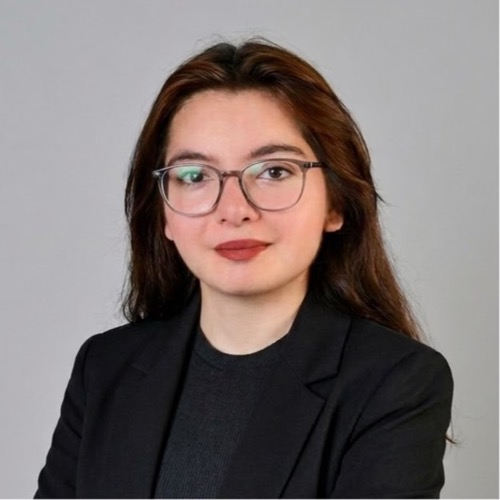
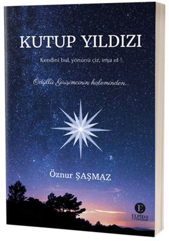
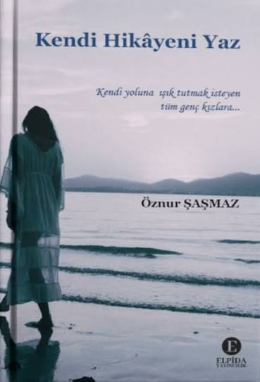

Girişimci & Eğitmen
Genç kadınların girişimcilik yolunu daha kısa yapıyorum.
M Strategy ve TÜGA – Türkiye Girişim Ağı kurucusu. Danışmanlık, eğitim, kitaplar ve sahne — hepsi üretmek isteyen kadınlara yol açmak için.

Hakkında
Mühendislik okuyorum, işim insanlarla.
Bursa Teknik Üniversitesi'nde Metalurji ve Malzeme Mühendisliği öğrencisiyim; ama zamanımın çoğu kampüsün dışında, bir şeyler kuran insanların arasında geçiyor.
M Strategy'i markalara ve yeni başlayan girişimcilere strateji, danışmanlık ve eğitim vermek için kurdum. TÜGA – Türkiye Girişim Ağı'nın da kurucusuyum; girişimcileri bir araya getiren bir ağ. Yanında online eğitim paketleri ve seminerler düzenliyorum, Teknoloji Transfer Ofisi'nde kurumsal iletişim ve dijital pazarlama tarafında staj yapıyorum.
TEDx sahnesinde konuştum, iki kitaba katkı verdim, dergilerde ve podcastlerde girişimcilik yolculuğumu anlattım. "Yılın İlham Veren Genci" seçildim. Hepsinin ortak noktası şu: kendini geliştirmek isteyen genç kadınlara, bir adım önce yürümüş biri olarak yol göstermek istiyorum.
Şu an
- M StrategyKurucu — strateji, danışmanlık & eğitim
- TÜGA – Türkiye Girişim AğıKurucu
- BTÜ Teknoloji Transfer OfisiKurumsal iletişim & dijital pazarlama stajyeri
- UDV — Üniversiteli Ders VeriyorEğitmen
- Bursa Teknik ÜniversitesiMetalurji ve Malzeme Mühendisliği öğrencisi
Girişimler
Üzerinde çalıştığım işler.
M Strategy
Strateji & Danışmanlık
Markalara ve yeni girişimcilere strateji, kişisel marka ve dijital büyüme tarafında danışmanlık ve eğitim veren çatı. Kurucusuyum.
Instagram'da →Eğitim
Online Paketler & Seminerler
Girişime başlama, kişisel marka ve etkinlik yönetimi üzerine online eğitimler ve canlı seminerler — çoğunlukla üniversiteli genç kadınlara yönelik.
Ağ
TÜGA – Türkiye Girişim Ağı
Girişimcileri, öğrencileri ve mentorları bir araya getiren bir ağ. Kurucusuyum.
Instagram'da →Proje
Kadınlar Günü Farkındalık Organizasyonu
8 Mart için kadınlara yönelik farkındalık yaratan bir organizasyon kurguladım ve hayata geçirdim.
Haberi oku →Konuşmalar & Sahne
Sahnede olduğum yerler.
TEDx
TEDxAçı High School
Girişimciliğe nasıl başladığım ve "kendi hikâyeni yazmak" üzerine yaptığım konuşma.
Konuşmayı izle ▶
▶
- Seminer Üniversite & topluluk seminerleriGirişimcilik, kişisel marka ve etkinlik yönetimi oturumları Davet et →
- Topluluk TEKNOFEST SosyalTEKNOFEST topluluğunda aktif profil Profili gör →
- Eğitmenlik UDV — Üniversiteli Ders VeriyorEğitmen olarak öğrencilere ders desteği Sayfaya git →
Kitaplar
Katkı verdiğim kitaplar.
İki ortak kitapta kendi girişimcilik hikâyemi ve genç kadınlara önerilerimi yazdım.


Basında
Hakkımda yazılanlar.
- Ödül "Yılın İlham Veren Genci" seçildiMimoza Global Medya Oku →
- Portre Kadınların İlham Kaynağı Ödüllü Girişimci Öznur ŞaşmazBizdenbil Oku →
- Söyleşi Ödüllü Girişimci Öznur Şaşmaz ile SohbetDost Sohbeti Oku →
- Röportaj Genç Girişimci Öznur Şaşmaz ile Röportajİş Kulübü Oku →
- Haber Genç Kadın Girişimciden Kadınlar Günü'ne Özel Farkındalık OrganizasyonuBursa Söylem Gazetesi Oku →
- Dergi Uwords Dergi14. sayıda girişimcilik yazısı Oku →
- Dergi Türk Telekom e-dergiGenç girişimci içeriği Uygulamada →
Dinle & İzle
Konuk olduğum yayınlar.
- YouTube Yaşam ve Ötesi — Öznur Şaşmaz, GirişimciCanlı yayın söyleşisi İzle →
- YouTube Kendi Hikâyesini Yazma YolculuğuGenç girişimci söyleşisi İzle →
- Podcast Umut Uçar ile Kalbin Sesi — Radyo KazanGirişimcilik ve ilham üzerine Bağlantı →
- Podcast Kadın ve GirişimcilikKadın girişimciler üzerine bölüm Bağlantı →
İletişim
İş birliği, konuşma daveti ya da sadece merhaba demek için yazabilirsin.
collabwithoznur@gmail.com